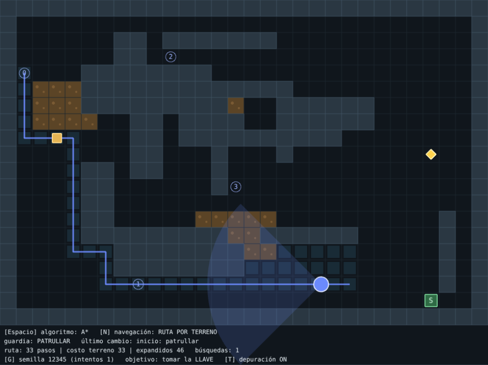
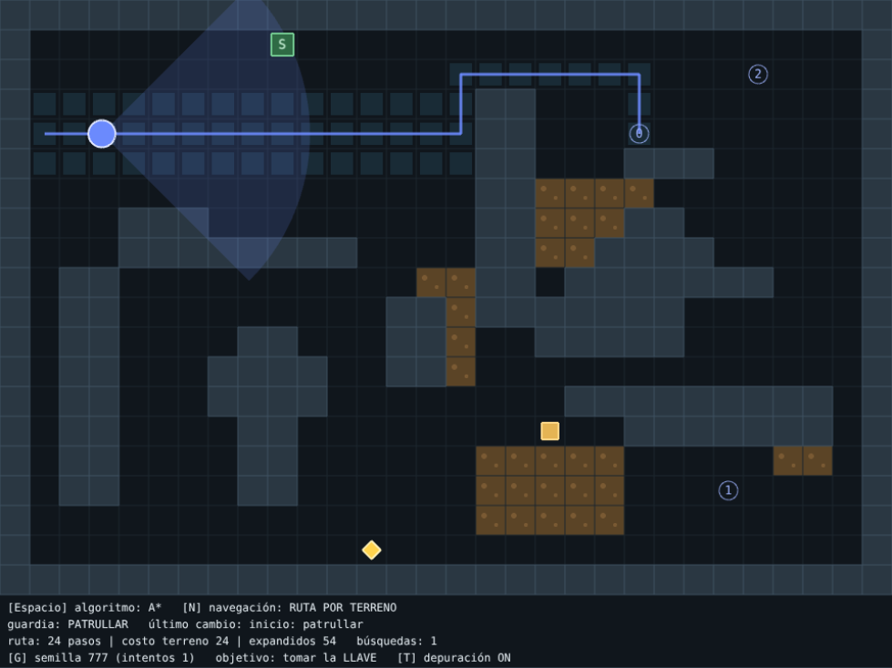
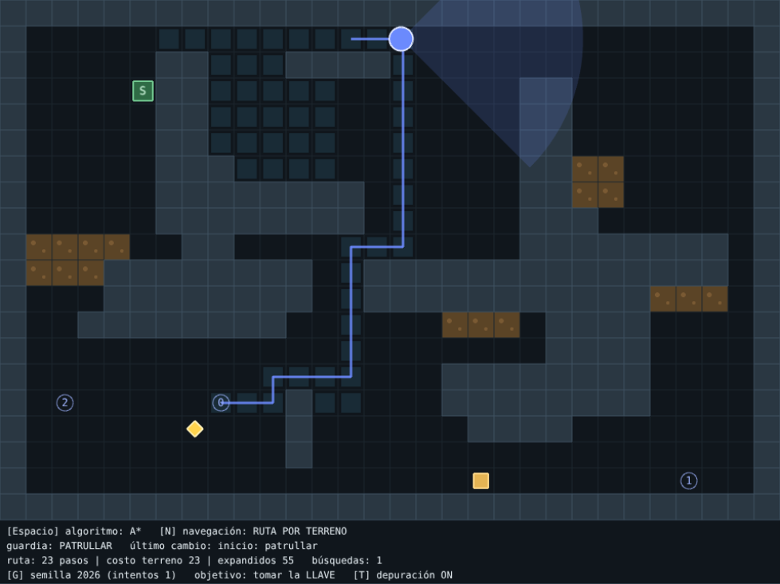
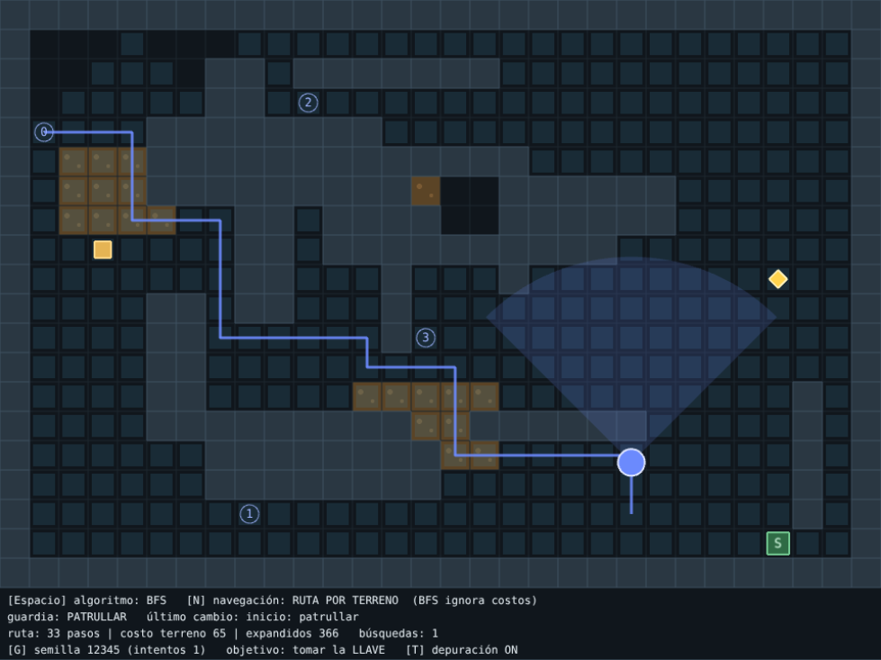
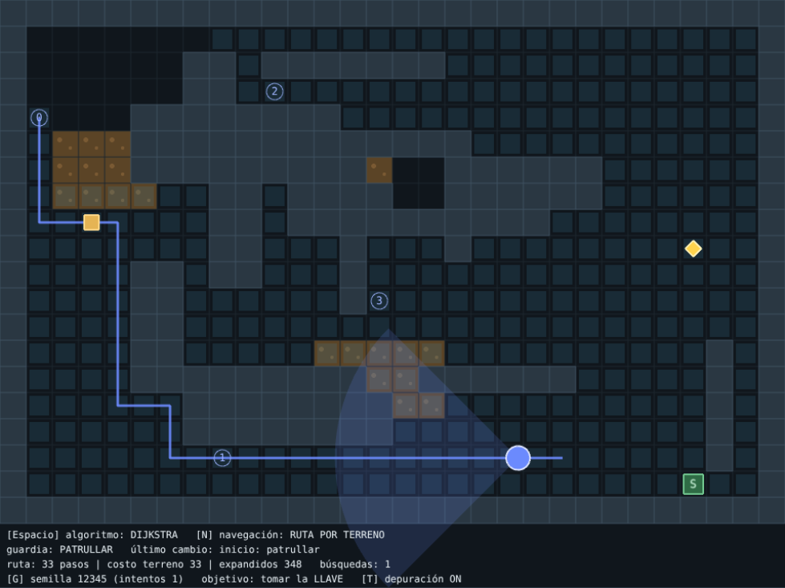
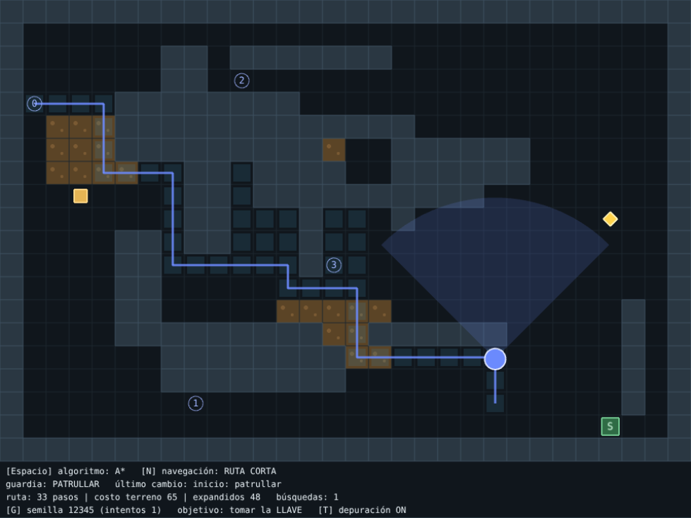

PIAPC 2026 · TP FINAL INTEGRADOR · UNRAF
IA para un NPC que percibe, recuerda, decide y navega sobre escenarios generados proceduralmente.
Austin Ham
| Tecla | Acción |
|---|---|
| WASD | mover |
| Q | hacer ruido |
| Espacio | algoritmo de búsqueda |
| N | alternativa de navegación |
| G / R | nuevo mapa / reiniciar |
| T | depuración |



14–20 muros, 3–5 zonas de barro, posiciones de jugador, guardia, llave, salida y 3–4 puntos de patrulla.
Todo en celdas libres y sin superponer · distancias mínimas · camino jugador→llave→salida · camino entre puntos de patrulla. Si falla: se descarta y se reintenta (máx. 50) o se usa un mapa base. 500 semillas probadas.


| Algoritmo | Frontera | Minimiza | Límite |
|---|---|---|---|
| BFS | cola FIFO | pasos | supone costos iguales: no ve el barro |
| Dijkstra | menor costo g | costo | explora en todas direcciones |
| A* | menor g + h (Manhattan) | costo | h válida porque el costo mínimo es 1 y hay 4 vecinos |

Visión: cono de 90°, 7 celdas, no ve a través de paredes. Oído: ruidos de radio 6 celdas. Visión > sonido.
Última posición conocida, sólo si la percibió. Nunca usa la posición real oculta del jugador.
Cinco modos claros y legibles para el jugador: el color del guardia y del cono indican el estado; el HUD muestra la última transición.
[telemetria] escenario semilla=12345 intentos=1
[telemetria] ruta astar/terreno -> (1,4): 33 pasos,
costo terreno 33, expandidos 46
[telemetria] configuracion: astar / corta
[telemetria] ruta astar/corta -> (1,4): 33 pasos,
costo terreno 65, expandidos 48
[telemetria] FSM patrullar -> perseguir (ve al jugador)
[telemetria] fin: atrapado
Cinco specs en specs/, escritas antes de implementar cada parte: generador, búsqueda, navegación, FSM y juego. Cada una tiene “cómo comprobarlo”, que se convirtió en pruebas automatizadas (66 tests).
Ejemplo — specs/03-navegacion.md:
- Ruta corta: todas las celdas cuestan 1. - Ruta por terreno: el barro cuesta 5. - La ruta se calcula sólo ante un cambio relevante, no en cada cuadro. Cómo comprobarlo: con barro entre el guardia y su destino, la ruta corta lo cruza y la ruta por terreno lo evita.
Exploración del laboratorio, implementación de cada spec, pruebas y capturas automáticas en navegador.
?seed=&algo=&nav= para repetir un caso en la demo.Repositorio, GDD, specs y README con instrucciones de ejecución en el mismo proyecto.
?seed=12345 con T activado: mostrar el guardia patrullando y la ruta.